Todo sobre ellos
¿Qué es?
También conocidos como resistencias, son elementos pasivos que tienen la propiedad de oponerse al paso de la corriente eléctrica, provocando una caída de tensión y generando calor como resultado.
¿Para qué se utiliza?
Dentro de las utilidades se destaca su capacidad para limitar la corriente eléctrica con el fin de proteger otros componentes como los diodos LED, evitar sobrecargas y mantener valores adecuados de operación. También se emplean para dividir voltajes en lo que se conoce como divisores de tensión, configuración muy común en circuitos analógicos, así como para ajustar niveles de señal, especialmente en aplicaciones como sensores donde se requiere modular pequeñas variaciones de voltaje.
¿Conoces las variedades de estas?
Las resistencias son como una familia con dos ramas principales: las del valor fijo, que son tercas y no cambian, y las de valor variable, que son adaptables y no permiten ajustar su valor.
Las resistencias fijas son las más comunes. Una vez fabricadas, su valor de resistencia no se puede alterar. Se diferencian principalmente por el material con el que están hechas y su construcción, ejemplo de estas tenemos:
Resistencias de Carbón
Una de las más antiguas. Están hechas de polvo de carbón y son económicas, pero no son muy precisas. Ideales para circuitos simples donde la exactitud no es crítica.
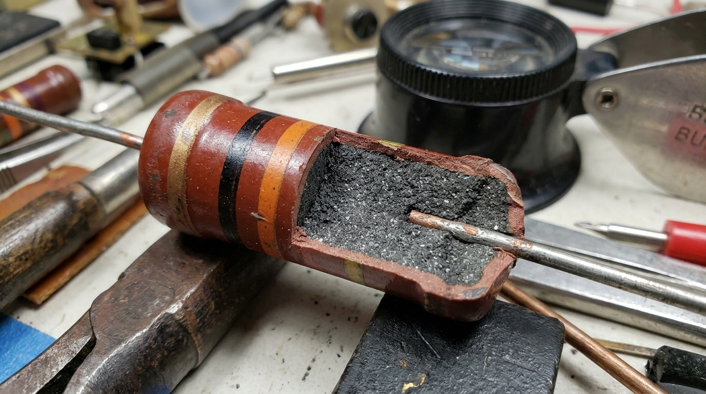
Resistencias de Película de Carbón
Similar a la anterior, pero más moderna. Tienen una capa (película) de carbón sobre un cilindro cerámico. Son más estables y generan menos ruido.
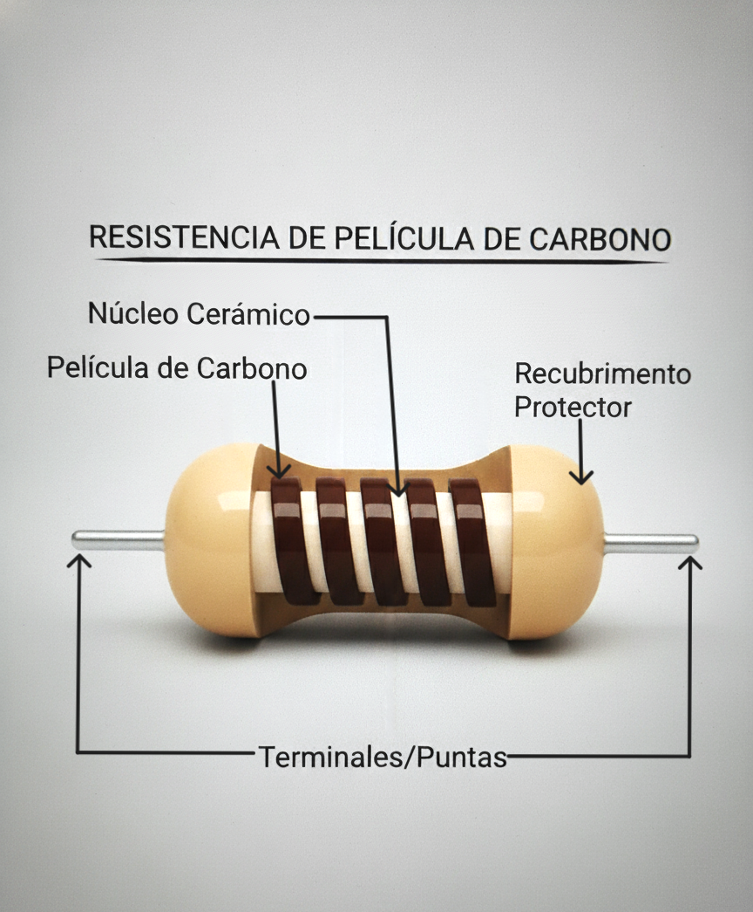
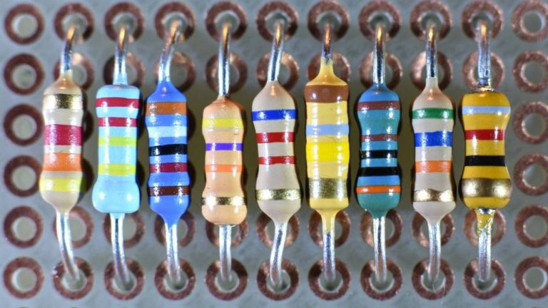
Resistencias de Película Metálica
Las más usadas hoy en día. Usan una película de aleación metálica (como níquel-cromo). Son muy estables, precisas y confiables para casi cualquier aplicación, ideales para instrumentos de precisión.
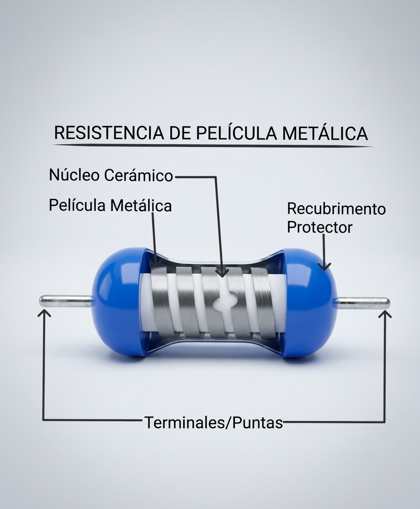
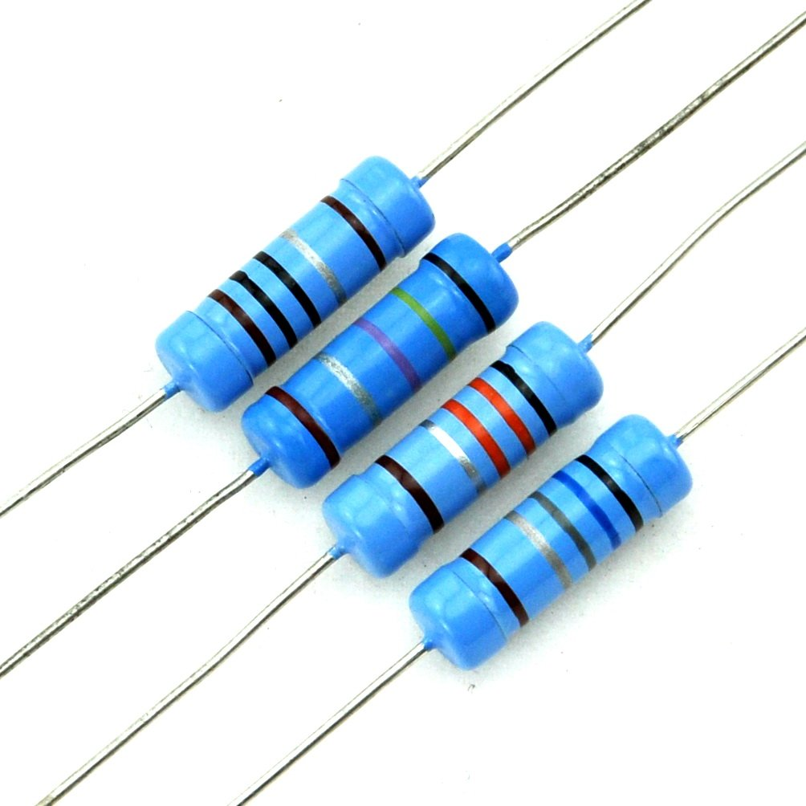
Resistencias de Hilo Bobinado
Las fuertes del grupo. Se fabrican enrollando un hilo metálico (como una aleación de níquel-cromo) en un núcleo cerámico. Están diseñadas para disipar mucha potencia (calor), manejar altas corrientes, por lo que se usan en equipos como amplificadores de audio.
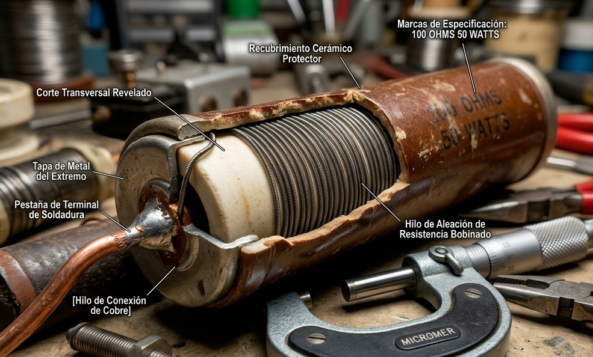
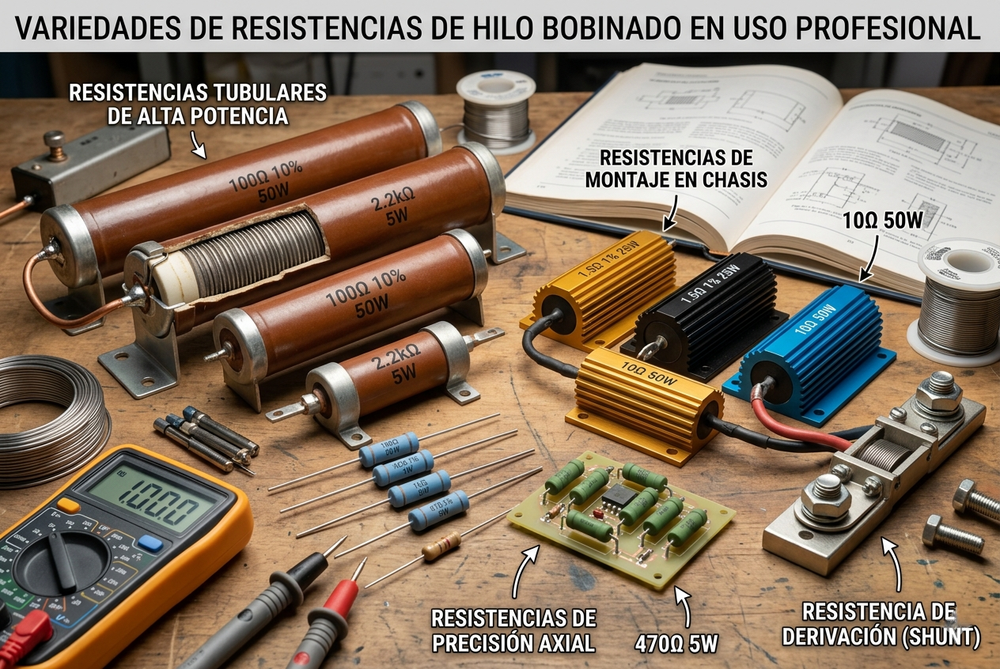
Resistencias de Montaje Superficial (SMD)
Las miniaturas. No tienen patas y se soldan directamente sobre la placa de circuito. Son la columna vertebral de toda la electrónica compacta actual, como los teléfonos móviles y las laptops.
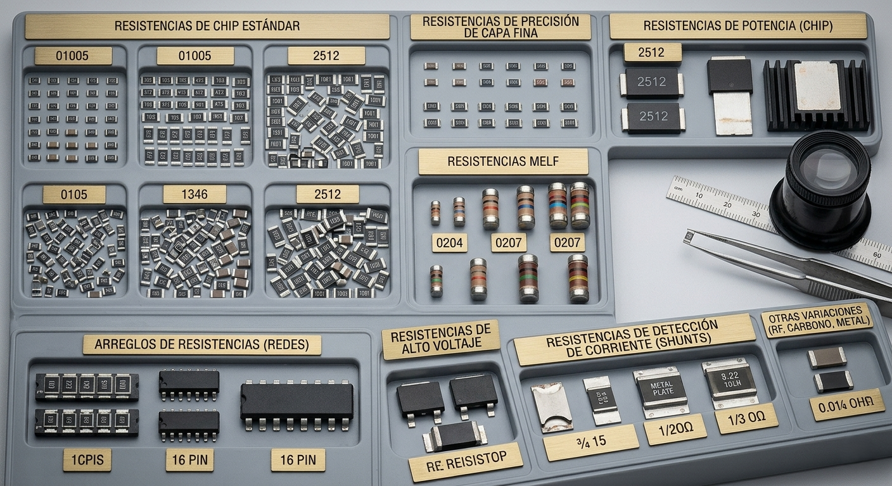
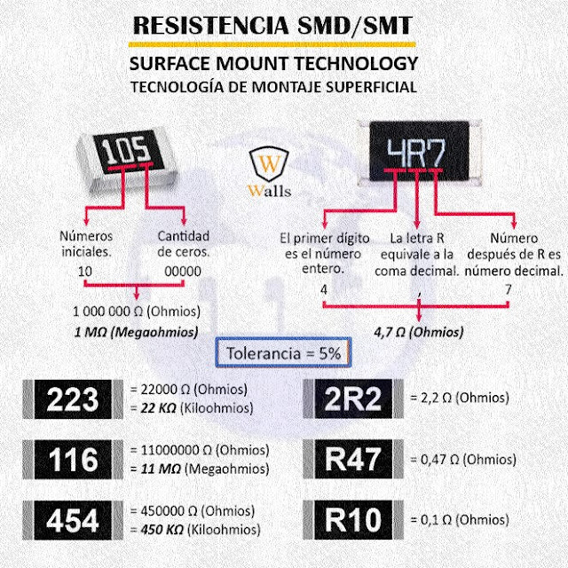
Las resistencias variables son todo lo contrario. Su valor de resistencia se puede cambiar de forma manual o mecánica. Son los controles de volumen, brillo y ajuste finos del mundo electrónico, los tipos más comunes son:
Potenciómetros
Son los reyes del ajuste manual. Tienen tres terminales y nos permiten variar continuamente la resistencia girando una perilla o deslizando una palanca. Los usamos a diario para subir o bajar el volumen de un radio o la intensidad de una lámpara.
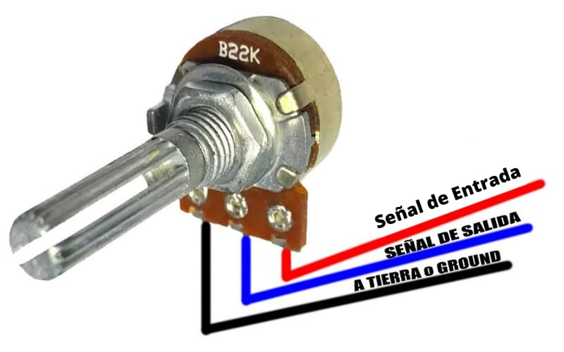
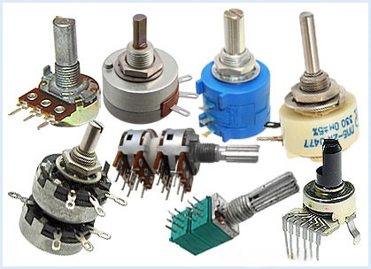
Trimmers o Presets
Son los 'hermanos pequeños' de los potenciómetros. También se ajustan con un destornillador, pero están diseñados para ajustes ocasionales, no para uso diario. Se usan para calibrar o afinar un circuito en fábrica y luego dejarlo fijo(procesos de calibración durante el ensamblaje de dispositivos electrónicos).
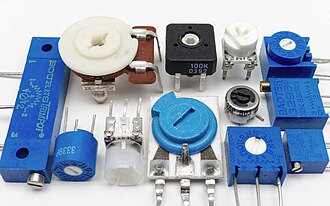
Reóstatos
Son resistencias variables cuya función principal es proporcionar una corriente variable a una carga a partir de una tensión fija. A diferencia del potenciómetro, que se usa generalmente como divisor de tensión, el reóstato se conecta para controlar la intensidad del flujo eléctrico en un circuito, siendo muy útil en aplicaciones de control de volumen, velocidad o iluminación
También existen otra variedades de resistencias que su valor cambia debido a otros factores como lo son:
Termistores
Son resistores no lineales cuyo valor cambia significativamente con las variaciones de temperatura
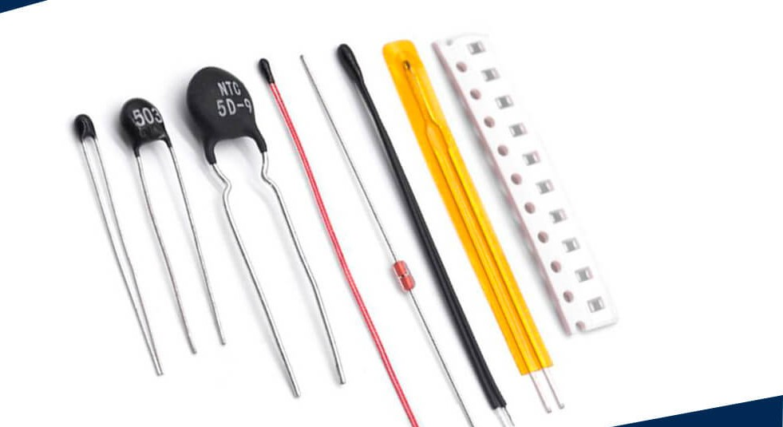
Fotorresistencia
También conocidas como LDR (Light Dependent Resistors), son componentes cuyo valor de resistencia depende de la cantidad de luz que incide sobre ellos, se utilizan principalmente como sensores ópticos en sistemas de encendido automático de luces o alarmas.
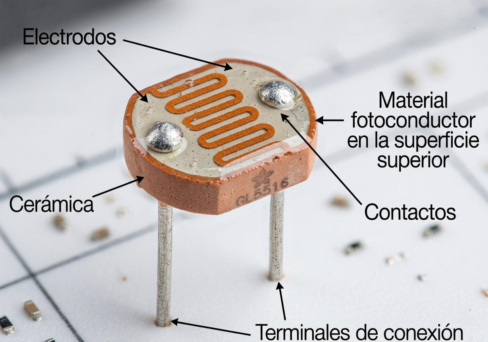
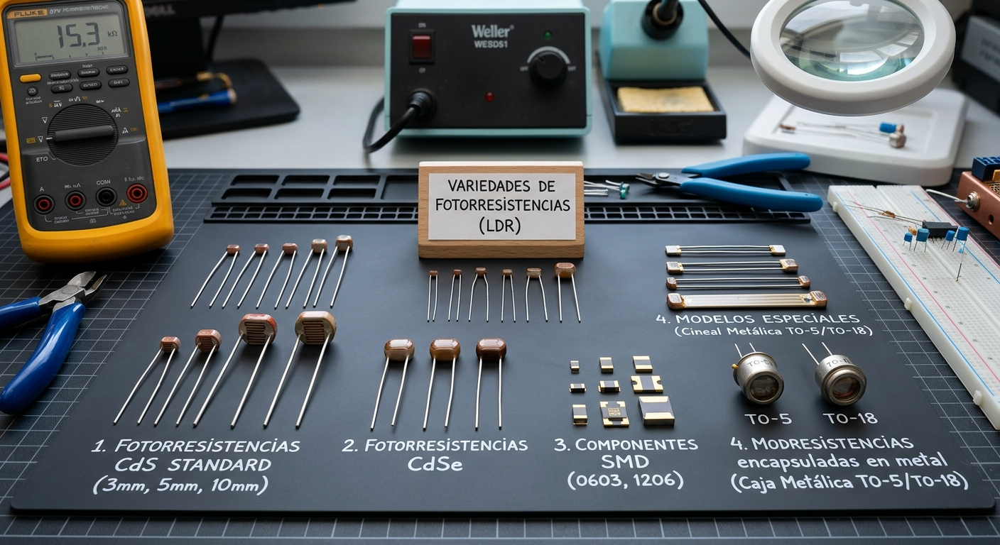
Varistor
Un varistor o VDR (Voltage Dependent Resistor) es un tipo de resistor no lineal, se caracteriza por disminuir su valor óhmico hasta llegar a cero cuando supera su voltaje nominal. Su aplicación principal es como supresor de transitorios o picos de tensión. Actúa como un escudo que protege a los componentes electrónicos sensibles de sobretensiones momentáneas provocadas por relámpagos, motores eléctricos o fallos en la red comercial.
Ejemplo de uso de potenciómetro encendiendo un Led.
Cantidad de resistencia obtenida
El valor de la resistencia se puede obtener mediante tres vías
- Con un voltímetro como se evidenció anteriormente.
- Mediante el código de colores o respectivos valores en su cubierta como en las resistencias SMD.
- Y por la ley de ohm.
Buscar palabras
Hallar las palabras ocultas.
{kind=link}
{kind=link}